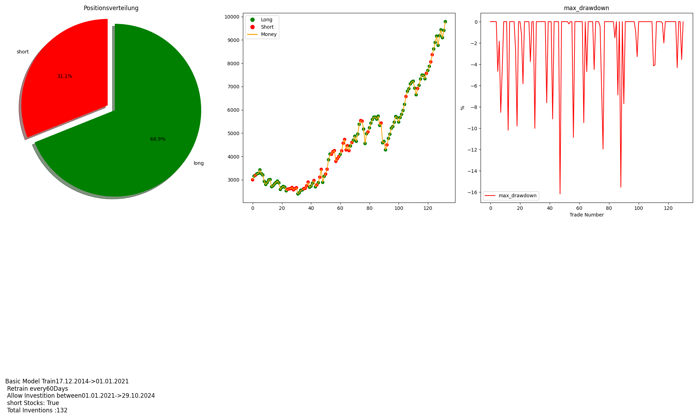

Willkommen auf meiner Retro-Webseite
Result Bild Downloaden
Json Historie Downloaden
CSV Historie Downloaden
Über die Seite
Diese Seite ist nur zum Testen der Funktionen und des kurzfristigen Environments.
Bild anzeigen
×
